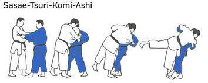

O judô é uma arte marcial de origem japonesa criada por Jigoro Kano no final do século XIX. Mais do que uma luta, ele é um caminho de disciplina, respeito e autoconhecimento. Baseado em princípios como o máximo de eficiência com o mínimo de esforço e a cooperação mútua para benefício próprio e do próximo, o judô combina técnicas de projeção, imobilização e controle. Além do aspecto esportivo, que faz parte dos Jogos Olímpicos desde 1964, o judô também contribui para o desenvolvimento físico, mental e social de seus praticantes, sendo uma prática que une tradição, filosofia e esporte.
O Sasae Tsurikomi Ashi é uma técnica de projeção do judô classificada como ashi-waza (técnica de perna). Seu nome significa “bloqueio do pé com ação de levantar e puxar”. Nela, o judoca utiliza o movimento dos braços para desequilibrar o adversário para frente ou para o lado, enquanto bloqueia o pé ou tornozelo do oponente com a sola do próprio pé. Essa combinação de puxada e bloqueio faz com que o adversário perca o equilíbrio e seja projetado ao solo. É uma técnica muito eficiente, que valoriza o tempo e a precisão em vez da força bruta.
